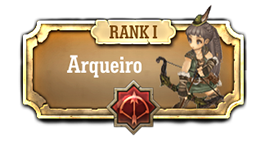
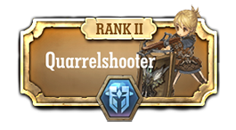
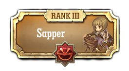
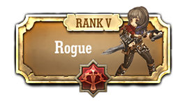
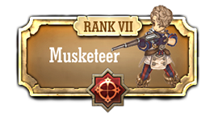
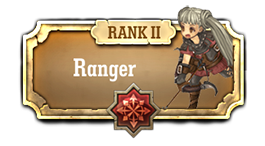
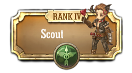
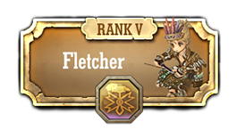
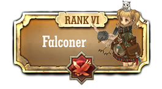
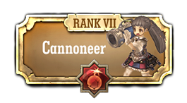

Classe Arqueiro


Classe Arqueiro usa arcos e varios equipamentos secundários.
suas especialidades são de longo alcance e ataques ágeis
suas especialidades são de longo alcance e ataques ágeis

Quarrel Shooters usam uma besta e escudo para o combate estratégico.
Eles podem se defender de contra ataques de longo alcance usando seus pavises , colocando-os no chão
Eles podem se defender de contra ataques de longo alcance usando seus pavises , colocando-os no chão

Sappers são arqueiros que constroem armadilhas e atrai os inimigos para eles.
A Wugushi é especializada no uso de vários venenos para atacar ou enfeitiçar inimigos.

Rogues são profissionais de combate que fará de tudo para a vitória.
Eles são especializados para emboscar inimigos por trás usando arcos e punhais.
Eles são especializados para emboscar inimigos por trás usando arcos e punhais.
Schwarzer Reiters usam manobras rapidamente.
eles são especializados em diversas técnicas de tiro , usando uma pistola.
eles são especializados em diversas técnicas de tiro , usando uma pistola.

Musketeers são a classe artilheiro que usa um rifle. O mosquete tem alta velocidade de ataque e habilidades eficazes de combate próximo trimestre .

Rangers são especializados na luta contra vários inimigos com seus ataques rápidos e de longo alcance.

Hunters são treinadores que caçam inimigos usando companheiros.
Companheiros usar as habilidades que exigem a cooperação com os seus proprietários , tais como morder e agarrar inimigos , ou encontrar alvos escondidos .
Companheiros usar as habilidades que exigem a cooperação com os seus proprietários , tais como morder e agarrar inimigos , ou encontrar alvos escondidos .

Scouts são especializados em reconhecimento e de infiltração.
eles usam cautela para esconder-se e transmitir a situação do inimigo para aliados , proporcionando uma vantagem na batalha.
eles usam cautela para esconder-se e transmitir a situação do inimigo para aliados , proporcionando uma vantagem na batalha.

Fletchers fazem e usam flechas especiais.
flechas diferentes resultam em ataques poderosos , dependendo do tipo de inimigo, combate e a situação
flechas diferentes resultam em ataques poderosos , dependendo do tipo de inimigo, combate e a situação

Falconers controlam falcões.
falcões podem ser exigente , mas eles se tornam companheiros de confiança , quando bem treinados.
falcões podem ser exigente , mas eles se tornam companheiros de confiança , quando bem treinados.

Cannoneers são a classe de tipo arqueiro.
O Canhão você pode confiar em seu poder de fogo e da gama de área que pode cobrir.
O Canhão você pode confiar em seu poder de fogo e da gama de área que pode cobrir.